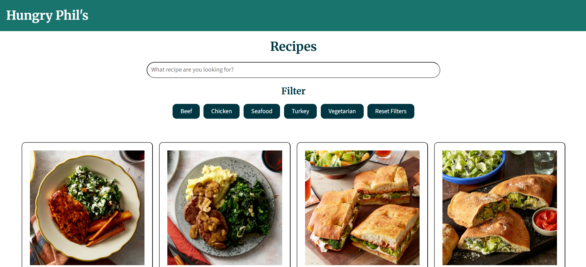

Cookbook Case Study
Overview
For my Web Scripting II project, I turned a collection of recipe PDFs into a website with filters and a search bar using PHP and MySQL. The goal was to move from static documents to a digital interface where it would enhance the user experience by allowing them to browse, update, and use it on different devices. The final product was a fully functioning recipe database developed in VSCode with PHP, MySQL, HTML, CSS, and JavaScript, and man aged through GitHub. It was also developed locally in MAMP with VS Code, and then deployed to Drexel’s hosting environment using Cyberduck and PHPmyAdmin.
Context and Challenge
Background:
My final project for this class focuses on building a recipe website using MySQL and PHP. The project is an individual assignment and is part of a scripting course for web development. Over the course of 10 weeks, only three assignments helped in the production of my final project: Alpha, Beta, and Final Project